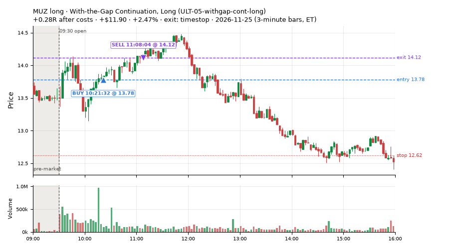
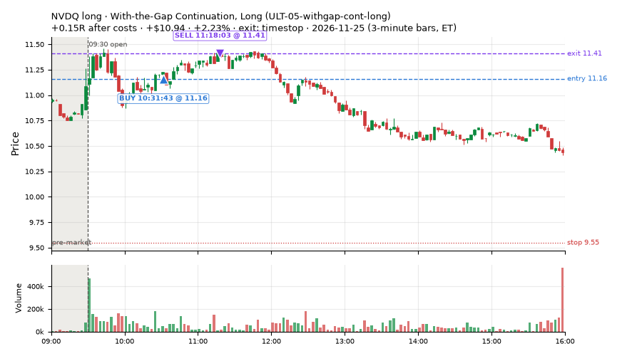
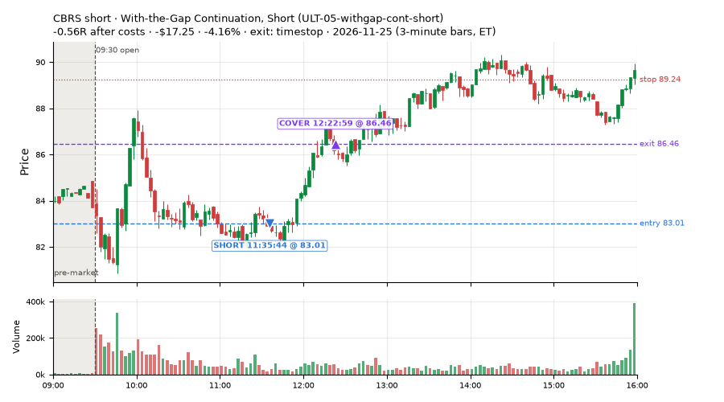
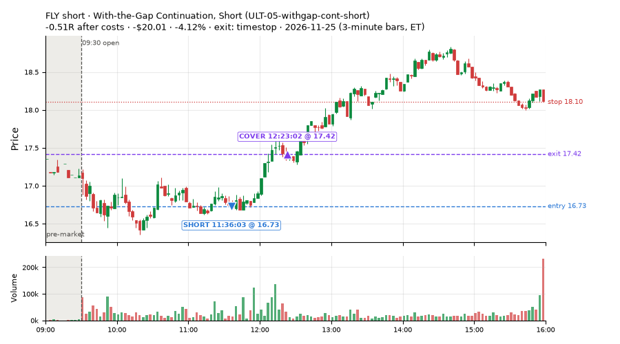
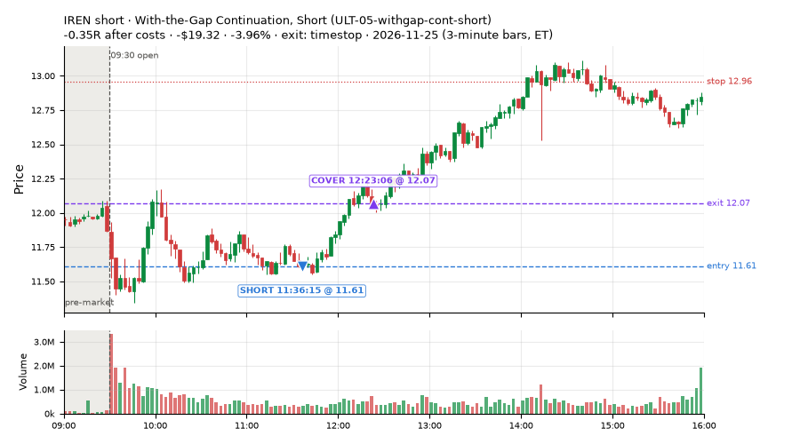
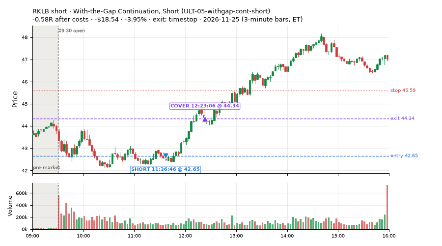
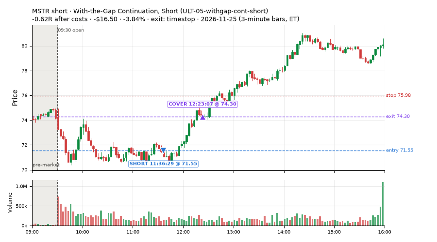

180 trades · win rate 31% · P/L $-649.98
PROBATION: no live setup has passed both locked test periods. 10 owner-directed setups added 2026-10-08 (MarcoFlow top 5 + 5 new), untested live. RW6G1 (RW6 + VWAP band guard) added 2026-10-09, probation.

| Symbol | Setup | Side | In | Out | Entry | Exit | Exit reason | % gained | P/L |
|---|---|---|---|---|---|---|---|---|---|
| MUZ | With-the-Gap Continuation, Long (ULT-05-withgap-cont-long) | long | 10:21 | 11:08 | 13.78 | 14.12 | timestop | +2.47% | $11.90 |
| NVDQ | With-the-Gap Continuation, Long (ULT-05-withgap-cont-long) | long | 10:31 | 11:18 | 11.16 | 11.41 | timestop | +2.23% | $10.94 |
| SPXL | Index Dip Bounce 5 3x S&P (IDX5-spy050-0945-3x-trail) | long | 09:51 | 10:10 | 205.33 | 209.67 | stop | +2.12% | $13.03 |
| Symbol | Setup | Side | In | Out | Entry | Exit | Exit reason | % lost | P/L |
|---|---|---|---|---|---|---|---|---|---|
| CBRS | ULT-05-withgap-cont-short | short | 11:35 | 12:22 | 83.01 | 86.46 | timestop | -4.16% | $-17.25 |
| FLY | ULT-05-withgap-cont-short | short | 11:36 | 12:23 | 16.73 | 17.42 | timestop | -4.12% | $-20.01 |
| IREN | ULT-05-withgap-cont-short | short | 11:36 | 12:23 | 11.61 | 12.07 | timestop | -3.96% | $-19.32 |
| RKLB | ULT-05-withgap-cont-short | short | 11:36 | 12:23 | 42.65 | 44.34 | timestop | -3.95% | $-18.54 |
| MSTR | ULT-05-withgap-cont-short | short | 11:36 | 12:23 | 71.55 | 74.30 | timestop | -3.84% | $-16.50 |







Signal to fill: median 2s, 90th percentile 3s (180 trades). Bars close each minute; the order follows the bar close.
Best excursion (MFE): median 0.32R; worst (MAE) median 0.42R. 42% of trades never got +0.25R in our favour; 5 reached +1R and still closed at or below 0.
| Symbol | Setup | Best R | Worst R | Closed R |
|---|---|---|---|---|
| HSIC | GEN-261021-01-BearDiv-RVolDayle0p47-BarsSinceHODle0-LAM-SPYltm0p25-t1s1-short | +0.91 | -1.18 | -1.24 |
| TXT | GEN-261028-10-BarRngATRge0p18-Flow3lem0p54-FromPCATRge0p28-PM-SPYgt0p5-hold-long | +0.43 | -1.48 | -1.44 |
| SNK | GEN-261023-05-NewLOD-SMA20dlem0p94-ORLdistlem0p24-PM-BRopgt0p65-hold-long | +0.72 | -1.10 | -1.11 |
| ASTS | GEN-261026-09-BBpctle0p3-SMA20slopege0p46-FromPCATRge0p45-LATE-BRvwgt0p6-t05s05-long | +0.69 | -1.04 | -1.09 |
| UVXY | GEN-261028-01-MACDhge0p12-Since950ATRlem0p25-LATE-SPYgt0p5-holdtr-long | +1.53 | -0.20 | -0.13 |
| Entry time | Trades | Win | Avg R | P/L |
|---|---|---|---|---|
| 09:50-10:30 | 23 | 35% | -0.07 | $5.25 |
| 10:30-11:30 | 27 | 37% | -0.24 | $-89.88 |
| 11:30-13:00 | 26 | 0% | -0.72 | $-372.44 |
| 13:00-14:00 | 24 | 12% | -0.63 | $-159.95 |
| 14:00-16:00 | 80 | 44% | -0.06 | $-32.95 |
| Setup | Trades | Win | Avg R after costs | Adj R (net of SPY) | Avg R ex-market (all sessions) | P/L |
|---|---|---|---|---|---|---|
| Generated: Late-AM Divergence Short (quiet) (GEN-261021-01-BearDiv-RVolDayle0p47-BarsSinceHODle0-LAM-SPYltm0p25-t1s1-short) | 1.0 | 0% | -1.24 | +0.69 | – | $-2.42 |
| Generated: PM New-Low Buy (strong mkt) (GEN-261023-05-NewLOD-SMA20dlem0p94-ORLdistlem0p24-PM-BRopgt0p65-hold-long) | 25.0 | 8% | -0.64 | -0.79 | -0.47 (beta -0.60, n 25) | $-166.21 |
| Generated: Late Failed-Breakdown Pop Short (GEN-261023-09-ORBfailDn-Ret15mge0p54-LATE-BRvwgt0p7-holdtr-short) | 45.0 | 49% | +0.04 | +0.07 | +0.07 (beta -0.41, n 45) | $4.67 |
| Generated: Open Up-Day Bounce Short (GEN-261026-05-Ret15mATRge0p042-FromPCATRge0p28-ORHdistlem0p38-OPEN-BRopgt0p5-hold-short) | 1.0 | 0% | -1.11 | -0.50 | +0.01 (beta -0.89, n 28) | $-4.62 |
| Generated: Late Uptrend Dip Buy (up day) (GEN-261026-09-BBpctle0p3-SMA20slopege0p46-FromPCATRge0p45-LATE-BRvwgt0p6-t05s05-long) | 5.0 | 60% | +0.00 | -0.07 | -0.21 (beta +7.82, n 5) | $-11.21 |
| Generated: Late Pullback Buy (MACD rising) (GEN-261027-01-MACDhge0p12-Ret15mATRlem0p069-LATE-BRvwgt0p5-t05s1-long) | 7.0 | 57% | -0.28 | -0.27 | +0.04 (beta -1.45, n 28) | $-3.09 |
| Generated: Morning Up-Stock Dip Short (GEN-261027-07-RSI14le35-FromOpenge2-AM-BRvwlt0p5-t1s1-short) | 1.0 | 0% | -1.12 | -1.11 | -0.38 (beta -1.29, n 48) | $-14.19 |
| Generated: Late Down-Stock Turn Buy (SPY up) (GEN-261028-01-MACDhge0p12-Since950ATRlem0p25-LATE-SPYgt0p5-holdtr-long) | 14.0 | 14% | -0.24 | -0.38 | -0.04 (beta -0.84, n 17) | $-29.59 |
| Generated: PM Big Red Bar Buy (up day) (GEN-261028-10-BarRngATRge0p18-Flow3lem0p54-FromPCATRge0p28-PM-SPYgt0p5-hold-long) | 6.0 | 50% | -0.12 | -0.64 | -0.94 (beta +1.80, n 6) | $-1.66 |
| Index Dip Bounce 5 3x S&P (IDX5-spy050-0945-3x-trail) | 1.0 | 100% | +1.68 | +1.18 | – | $13.03 |
| * SPY Dip of 0.30%, Breadth Turn (SPXL, trailing) (near-miss) (LD8-spy-dip030-breadthturn-spxl-holdtr-long) | 1.0 | 0% | -0.21 | -0.12 | – | $-3.28 |
| Late-Day ETF Dip Buy — WB4: more dips (refire, looser DI, falling-hour guard) (NM-ETF-late-dip-di-long-WB4) | 2.0 | 100% | +0.46 | +0.33 | +0.17 (beta +1.13, n 42) | $14.19 |
| NS2 Up-3 Short, QQQ Up, Slope Down (near-miss) (NM-RWR4-ns2-up3-qqqup-slopedn-short) | 1.0 | 100% | +0.22 | +0.25 | +0.32 (beta +0.01, n 5) | $2.90 |
| Big Gainer Fade with VWAP Band Guard (RW6G1-ns2-up3-vwap2sd-short) owner-directed; two-year history +0.26R n424 t2.39 (required 4.76), positive up and down sessions; locked block not scored | 2.0 | 50% | -0.15 | +0.04 | +0.42 (beta -0.68, n 7) | $-5.20 |
| With-the-Gap Continuation, Long (ULT-05-withgap-cont-long) | 22.0 | 59% | -0.15 | -0.20 | -0.06 (beta -0.04, n 348) | $-18.05 |
| With-the-Gap Continuation, Short (ULT-05-withgap-cont-short) | 46.0 | 4% | -0.47 | -0.26 | -0.05 (beta -0.49, n 109) | $-425.24 |
Market direction (SPY, beta 1) accounted for $-130.94 of today's $-649.98; the rest ($-519.04) came from the setups themselves. Avg R net of SPY: -0.24 (incl. a hedge leg's cost; report only).
28 setups live today. Today: 330 signals, 180 taken, 2 lost because another setup held the symbol (1%). Since 2026-11-12 (10 sessions): 2243 signals, 1149 taken, 36 lost to other setups (2%). Peak open positions today 94 of 400 slots. Earnings blackout removed 118 symbols before scanning.
Simulated playing time (not live): 1094 what-if trades of signals not taken, avg -0.07R, 46% winners; of them 36 lost to another setup (avg -0.09R).
Silent: GEN-261021-10-MACDhge0p079-VWAPbarslem7-OPEN-QQQup-t1s05-long, LIQ-pdl-sweep-open15-vwap-long
| Prio | Setup | Today sig / taken | Sessions | Signals / taken / trades | Taken/day | Expected/day | Lost to other setups | Lost to (setup n) | Top skip reasons | SIMULATED: not-taken n / avg R / win | Verdict |
|---|---|---|---|---|---|---|---|---|---|---|---|
| 1 | Late-Day ETF Dip Buy — WB4: more dips (refire, looser DI, falling-hour guard) NM-ETF-late-dip-di-long-WB4 | 5 / 2 | 7 | 53 / 42 / 42 | 6.00 | – | 3 | GEN-261023-09-ORBfailDn-Ret15mge0p54-LATE-BRvwgt0p7-holdtr-short 2, NS3-failed-vwap-reclaim-short 1 | spread / quote / size 4, other 4, symbol held by another setup 3 | 11 / +0.10R / 55% | ok 30.0 entries/week |
| 2 | Gap-Down Early Bounce Short (all day) — WB3: SPY-after-09:50 gates + gap < -0.5% + end 13:00 RW7-gapdn-bounce-early-short-FD-WB3 | 3 / 0 | 7 | 207 / 151 / 151 | 21.57 | – | 1 | GEN-261028-09-FlowShiftlem0p65-ADX7le23-AM-BRoplt0p35-t05s1-long 1 | spread / quote / size 50, not shortable / shorts off 5, symbol held by another setup 1 | 56 / -0.28R / 36% | ok 107.9 entries/week |
| 3 | Monday Weak-RS NS3 Short (near-miss) — WB3: reclaim volume >= 0.45x, from 10:05 NM-RWN5-ns3-mon-weakrs-short-WB3 | 0 / 0 | 7 | 49 / 32 / 32 | 4.57 | – | 0 | – | spread / quote / size 11, other 4, not shortable / shorts off 2 | 17 / +0.09R / 47% | ok 22.9 entries/week |
| 4 | Generated: Lunch New-Low Short (selling) — WB1: down >= 1.3 ATR on the day GEN-261026-03-NewLOD-Flow3lem0p37-FromOpenATRlem0p78-LUNCH-BRopgt0p5-holdtr-short-WB1 | 0 / 0 | 7 | 5 / 4 / 4 | 0.57 | – | 0 | – | not shortable / shorts off 1 | 1 / +1.02R / 100% | slow 2.9 entries/week; ~21 weeks to 60 trades |
| 5 | Generated: Late Down-Stock Turn Buy (SPY up) GEN-261028-01-MACDhge0p12-Since950ATRlem0p25-LATE-SPYgt0p5-holdtr-long | 19 / 14 | 4 | 25 / 17 / 17 | 4.25 | – | 1 | RW7-gapdn-bounce-early-short-FD-WB3 1 | other 5, spread / quote / size 2, symbol held by another setup 1 | 8 / -0.35R / 12% | ok 21.2 entries/week |
| 6 | Generated: PM VWAP Reclaim Buy (SPY up) GEN-261019-06-VWAPxUp-EMAdiffge0p29-PM-SPYgt0p5-holdtr-long | 6 / 0 | 4 | 41 / 18 / 18 | 4.50 | – | 3 | RW7-gapdn-bounce-early-short-FD-WB3 3, ULT-05-withgap-cont-short 1 | spread / quote / size 12, other 7, symbol held by another setup 3 | 23 / -0.01R / 48% | ok 22.5 entries/week |
| 7 | NS2 Up-3 Short, QQQ Up, Slope Down (near-miss) NM-RWR4-ns2-up3-qqqup-slopedn-short | 1 / 1 | 4 | 6 / 5 / 5 | 1.25 | – | 0 | – | not shortable / shorts off 1 | 1 / +0.41R / 100% | slow 6.2 entries/week; ~10 weeks to 60 trades |
| 8 | Backside VWAP-Test Short CWT04-backside-vwaptest-a15-short | 1 / 0 | 4 | 8 / 0 / 0 | 0.00 | – | 0 | – | not shortable / shorts off 4, spread / quote / size 2, other 2 | 8 / -0.52R / 25% | slow no entries yet |
| 9 | Generated: Late Gap-Down Oversold Buy GEN-261028-04-ORBfailUp-RSI14le22-Gaplem1p2-LATE-BRvwgt0p5-holdtr-long | 0 / 0 | 4 | 11 / 10 / 10 | 2.50 | – | 0 | – | spread / quote / size 1 | 1 / +0.94R / 100% | slow 12.5 entries/week; ~5 weeks to 60 trades |
| 10 | Big Gainer Fade with VWAP Band Guard RW6G1-ns2-up3-vwap2sd-short | 2 / 2 | 10 | 15 / 7 / 7 | 0.70 | 0.40 | 0 | – | not shortable / shorts off 5, spread / quote / size 2, other 1 | 8 / +0.80R / 88% | slow 3.5 entries/week; ~17 weeks to 60 trades |
| 11 | Backside Lower-High Short (big runner) CWT04-backside-lh-a25-short | 0 / 0 | 10 | 2 / 0 / 0 | 0.00 | – | 0 | – | spread / quote / size 1, other 1 | 2 / -0.09R / 50% | slow no entries yet |
| 12 | Index Dip Bounce 5 3x S&P IDX5-spy050-0945-3x-trail | 1 / 1 | 10 | 2 / 2 / 2 | 0.20 | – | 0 | – | – | 0 / – | slow 1.0 entries/week; ~60 weeks to 60 trades |
| 13 | Generated: Late Uptrend Dip Buy (up day) GEN-261026-09-BBpctle0p3-SMA20slopege0p46-FromPCATRge0p45-LATE-BRvwgt0p6-t05s05-long | 16 / 5 | 3 | 16 / 5 / 5 | 1.67 | – | 0 | – | other 8, spread / quote / size 3 | 11 / +0.05R / 64% | slow 8.3 entries/week; ~7 weeks to 60 trades |
| 14 | Generated: PM New-Low Buy (strong mkt) GEN-261023-05-NewLOD-SMA20dlem0p94-ORLdistlem0p24-PM-BRopgt0p65-hold-long | 35 / 25 | 3 | 35 / 25 / 25 | 8.33 | – | 0 | – | spread / quote / size 5, other 5 | 10 / -0.48R / 20% | ok 41.7 entries/week |
| 15 | * SPY Dip of 0.30%, Breadth Turn (SPXL, trailing) (near-miss) LD8-spy-dip030-breadthturn-spxl-holdtr-long | 1 / 1 | 10 | 3 / 3 / 3 | 0.30 | – | 0 | – | – | 0 / – | slow 1.5 entries/week; ~40 weeks to 60 trades |
| 16 | Generated: Open Below-VWAP Turn Buy (QQQ up) GEN-261021-10-MACDhge0p079-VWAPbarslem7-OPEN-QQQup-t1s05-long | 0 / 0 | 3 | 0 / 0 / 0 | 0.00 | – | 0 | – | – | 0 / – | silent no signals in 3 session(s); no expected rate on file |
| 17 | Generated: PM Big Red Bar Buy (up day) GEN-261028-10-BarRngATRge0p18-Flow3lem0p54-FromPCATRge0p28-PM-SPYgt0p5-hold-long | 25 / 6 | 3 | 25 / 6 / 6 | 2.00 | – | 0 | – | spread / quote / size 11, other 8 | 19 / -0.20R / 53% | slow 10.0 entries/week; ~6 weeks to 60 trades |
| 18 | Generated: Late Failed-Breakdown Pop Short GEN-261023-09-ORBfailDn-Ret15mge0p54-LATE-BRvwgt0p7-holdtr-short | 72 / 45 | 3 | 72 / 45 / 45 | 15.00 | – | 0 | – | other 13, spread / quote / size 10, not shortable / shorts off 4 | 27 / -0.00R / 56% | ok 75.0 entries/week |
| 19 | Prior-Day Low Sweep Reversal to VWAP LIQ-pdl-sweep-open15-vwap-long | 0 / 0 | 5 | 0 / 0 / 0 | 0.00 | – | 0 | – | – | 0 / – | silent no signals in 5 session(s); no expected rate on file |
| 20 | Generated: Lunch Wide-Range Short (SPY down) GEN-261021-03-RSI5le34-Ret15mATRge0p12-DayRngVsPrevge1p2-LUNCH-SPYltm0p25-t05s1-short | 0 / 0 | 3 | 1 / 1 / 1 | 0.33 | – | 0 | – | – | 0 / – | slow 1.7 entries/week; ~36 weeks to 60 trades |
| 21 | Generated: Late-AM Divergence Short (quiet) GEN-261021-01-BearDiv-RVolDayle0p47-BarsSinceHODle0-LAM-SPYltm0p25-t1s1-short | 7 / 1 | 3 | 10 / 2 / 2 | 0.67 | – | 0 | – | spread / quote / size 5, other 3 | 8 / -0.09R / 50% | slow 3.3 entries/week; ~18 weeks to 60 trades |
| 22 | Generated: PM Lower-Band Dip Buy (uptrend) GEN-261019-02-BBpctle0p017-SMA20slopege0p46-PM-QQQdn-t05s1-long | 0 / 0 | 4 | 14 / 13 / 13 | 3.25 | – | 0 | – | spread / quote / size 1 | 1 / +0.37R / 100% | ok 16.2 entries/week |
| 23 | Generated: Late Pullback Buy (MACD rising) GEN-261027-01-MACDhge0p12-Ret15mATRlem0p069-LATE-BRvwgt0p5-t05s1-long | 13 / 7 | 10 | 62 / 28 / 28 | 2.80 | – | 0 | – | spread / quote / size 24, other 8, price through stop/target 2 | 34 / +0.09R / 68% | slow 14.0 entries/week; ~4 weeks to 60 trades |
| 24 | Generated: Open Up-Day Bounce Short GEN-261026-05-Ret15mATRge0p042-FromPCATRge0p28-ORHdistlem0p38-OPEN-BRopgt0p5-hold-short | 2 / 1 | 8 | 45 / 28 / 28 | 3.50 | – | 3 | ULT-05-withgap-cont-long 3 | spread / quote / size 10, symbol held by another setup 3, other 3 | 17 / +0.70R / 65% | ok 17.5 entries/week |
| 25 | Generated: Morning Up-Stock Dip Short GEN-261027-07-RSI14le35-FromOpenge2-AM-BRvwlt0p5-t1s1-short | 7 / 1 | 10 | 209 / 48 / 48 | 4.80 | – | 0 | – | not shortable / shorts off 92, spread / quote / size 49, other 19 | 161 / -0.20R / 42% | ok 24.0 entries/week |
| 26 | Big Loser VWAP Reclaim Fade NS3-failed-vwap-reclaim-short | 0 / 0 | 10 | 123 / 61 / 61 | 6.10 | 3.03 | 4 | ULT-05-withgap-cont-long 3, IDX5-spy050-0945-3x-trail 1 | spread / quote / size 40, not shortable / shorts off 11, other 7 | 62 / +0.13R / 56% | ok 30.5 entries/week |
| 27 | With-the-Gap Continuation, Long ULT-05-withgap-cont-long | 29 / 22 | 4 | 681 / 348 / 348 | 87.00 | – | 20 | NS3-failed-vwap-reclaim-short 15, NM-RWN5-ns3-mon-weakrs-short-WB3 11, GEN-261026-05-Ret15mATRge0p042-FromPCATRge0p28-ORHdistlem0p38-OPEN-BRopgt0p5-hold-short 10 | spread / quote / size 165, other 148, symbol held by another setup 20 | 333 / -0.04R / 44% | ok 435.0 entries/week |
| 28 | With-the-Gap Continuation, Short ULT-05-withgap-cont-short | 85 / 46 | 4 | 212 / 109 / 109 | 27.25 | – | 0 | – | spread / quote / size 80, not shortable / shorts off 23 | 103 / -0.23R / 41% | ok 136.2 entries/week |
Every trade is attached as a CSV you can open and edit in Excel or Google Sheets. Live page: https://misiti15.github.io/MCF/live/